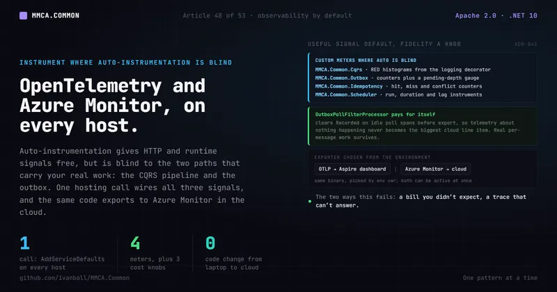

Run & extract · No. 48
Observability by Default: OpenTelemetry and Azure Monitor in MMCA

Auto-instrumentation gives you HTTP and runtime signals for free, but it is blind to the two paths that carry almost all of your framework's own work: the CQRS pipeline and the outbox. Here is how one shared hosting call wires OpenTelemetry logs, metrics, and traces, ships to the Aspire dashboard locally and to Azure Monitor in the cloud with no code change, and filters idle poll and probe spans so telemetry does not quietly become your biggest cloud line item.
You split the monolith into a handful of services, wire up OpenTelemetry because that is what you are supposed to do, deploy, and open the dashboard. HTTP spans are there. Runtime counters are there. Then someone asks the two questions that actually matter in an incident: "how long is this command taking and how often is it failing" and "is the outbox dead-lettering." And you realize the traces cannot answer either one.
That is not a gap in your setup. It is the ceiling of auto-instrumentation. The ASP.NET Core, HttpClient,
and .NET-runtime instrumentations give you generic transport and process signals, but they are structurally
blind to the two paths that carry almost all of a CQRS-and-outbox framework's real work: the use-case
pipeline and the background message drain. Nobody instruments those unless the framework does it for them.
And then the first Application Insights bill arrives. A deployed fleet polls every relational outbox table around the clock, and if every idle poll ships a span (plus the SqlClient child the Azure Monitor distro attaches to it), steady-state nothing becomes the loudest thing in your telemetry. Full-fidelity tracing is already the single largest observability line item; idle polling piles on top of it.
MMCA.Common treats observability as a hosting-layer default: one call on the host builder, and every service in the model gets the same logs, metrics, and traces, the same framework-specific instrumentation where auto-instrumentation is blind, and the same cost knobs, each with a deliberate default that a typo cannot flip.
Why it matters
Observability is the category you do not miss until production, and by then retrofitting it is expensive.
The rubric names the bar directly: structured logging with correlation IDs across boundaries, distributed
tracing and RED metrics wired to a backend, health checks for orchestrators, and (the part most teams
skip) deliberate noise control so high-volume low-value telemetry does not run up the bill
(ArchitectureEvaluationCriteria.md:408-413). It is a weight-2 category (:421).
Two forces pull against each other here. You want enough signal to operate the system, and you do not want the signal to cost more than the system. Most teams pick one end: they either instrument everything at full fidelity and get a telemetry invoice that rivals compute, or they trim so hard that an incident becomes a guessing game. The interesting engineering is in wiring the useful signal by default while making the expensive fidelity a knob you turn per host, not a rewrite.
The other reason it matters: in a modular monolith that extracts into services (ADR-008), the same telemetry has to make sense whether a request stays in one process or crosses a gateway and three service hosts. If observability is bolted on per app, it drifts. If it lives in the shared hosting defaults, every host, in-process or extracted, tells the same story the same way.
The MMCA answer: one call, one baseline, on every host
Every framework-consuming host calls AddServiceDefaults() early in Program.cs, and that method calls
ConfigureOpenTelemetry() (Extensions.cs:30, the call at :32) before anything module-specific. Only
host-level setup runs ahead of it, notably AddCommonSerilog, which has to come first so the OpenTelemetry
logging provider registered by AddServiceDefaults joins the same logging factory
(MMCA.Store.Catalog.Service/Program.cs:68-70). So a host opts in once and every project in the Aspire
model inherits the identical telemetry pipeline. There is no per-app ServiceDefaults copy: all four ADC
services and all three Store services consume this one implementation directly (for example
MMCA.ADC.Conference.Service/Program.cs:116 and MMCA.Store.Catalog.Service/Program.cs:73), as do both
gateways and both web UIs.
ConfigureOpenTelemetry (Extensions.Telemetry.cs:71, in the partial Extensions file that holds all of
the telemetry wiring) does four things.
It wires logging, metrics, and tracing. Logs go through the OpenTelemetry logger with
IncludeFormattedMessage and IncludeScopes on (Extensions.Telemetry.cs:73-77) so a scope carries its
structured state. The metrics half is a separate private method, ConfigureMetrics
(Extensions.Telemetry.cs:244, called through a one-line lambda at :80), and it starts with the ASP.NET
Core instrumentation through ConfigureAspNetCoreMetrics (called at :246, declared at :353), which is
on unless a cost knob below drops it. Tracing adds four activity sources by name (:83-86) and then
ASP.NET Core and HttpClient instrumentation (:106-109 or :113-114, depending on a knob below). That
is the free auto-instrumentation floor plus the framework's own sources.
It instruments only where auto-instrumentation is blind. Nine framework-owned meters carry custom signals, subscribed here by literal name because the Aspire package deliberately has no project reference to the assemblies that define them:
- The CQRS pipeline publishes RED metrics through a single meter
MMCA.Common.Cqrs(CqrsMetrics.cs:24): two duration histograms,cqrs.command.duration(CqrsMetrics.cs:29-32) andcqrs.query.duration(:35-38), both in milliseconds, recorded by the logging decorators and tagged by the operation name and anoutcometag. Count gives rate, the tag gives errors, the histogram gives duration. RED falls out of a pipeline layer that already exists (the logging decorator), so there is no per-handler discipline to keep up. The same meter carriescqrs.query.cache.hitandcqrs.query.cache.misscounters (:41-50), recorded by the caching query decorator, so a hit ratio per query is chartable off the same subscription, plus two short-circuit counters recorded by the authorization and timeout decorators:cqrs.authorization.denied.count(:53-56) andcqrs.timeout.count(:59-62), both taggedrequest_type, so a permission denying more traffic than expected or a handler that keeps exhausting its execution budget is visible as a metric rather than only as a client-side error rate. - The outbox owns a meter
MMCA.Common.Outbox, declared with all of its instruments in a dedicatedOutboxMetricsclass rather than in the processor (OutboxMetrics.cs:19, meter at:21), and it carries five: a dead-letter counteroutbox.dead_letter.count(:41-44), a success counteroutbox.processed.count(:47-50), an end-to-end dispatch-lag histogram in seconds (:57-60), anObservableGaugefor pending depth (:75-79) published each cycle from the depth the processor observed (OutboxProcessor.cs:171), and a second gauge,outbox.oldest_pending.agein seconds taggeddata_source(:98-102, fed bySetOldestPendingAgeat:115). The two say different things: the histogram reports how late the messages that did get delivered were, the age gauge reports how late a backlog already is while it is still stuck, which is the number an alert on a wedged outbox fires on (:81-86). The dead-letter counter has two increment sites, taggedevent_typeandreason: an unresolvable event type (OutboxProcessor.cs:852-855, reasontype_unresolvable; a row on its first attempt is retried once as transient before that unless the host setMaxRetriesto 1,:839-848) and an exhausted retry budget (:576-579, reasonretries_exhausted). The same activity source emits outbox spans (OutboxProcessor.cs:91). - The durable internal-command queue owns
MMCA.Common.InternalCommands(InternalCommandMetrics.cs:20, meter at:22) with the same shape one drain over a table needs: processed, failed and dead-letter counters (:38,:48,:57), a duration histogram (:66), a schedule-lag histogram (:75), a pending-depth gauge (:92) and an oldest-due-age gauge (:104). It is Article 51's subject; here it matters because it is the second background drain the trace filter has to know about. - The API idempotency filter owns a meter
MMCA.Common.Idempotency(IdempotencyMetrics.cs:19) with three counters:idempotency.replayed(:36-39),idempotency.conflicttagged by kind (:41-44), andidempotency.degraded(:46-49) for a request that ran without the guarantee because the cache or lock faulted. - The recurring job scheduler (ADR-074) owns a meter
MMCA.Common.Scheduler(SchedulerMetrics.cs:19, meter at:21) with three instruments: ascheduler.job.runscounter tagged by job name and by outcome, Succeeded, Failed or Skipped (:28-31), ascheduler.job.durationhistogram in seconds measured around the job's own execution (:39-42), and ascheduler.job.laghistogram in seconds between an occurrence becoming due and actually starting (:50-53), which is the number that answers "is the scheduler keeping up." A host that never enables the scheduler simply publishes nothing on that meter, so the subscription costs it nothing. - Four more meters cover paths a host opts into. The
broker transport owns
MMCA.Common.Broker(BrokerMetrics.cs:21, ADR-087) with two counters taggedevent_type:broker.fault.count(:30-33) for integration events that exhausted their retry policy and were published as a MassTransitFault<TEvent>, which is the natural alert target for consumer health, andbroker.circuit.open.count(:42-45) for outbox publishes the open circuit breaker rejected before they ever reached the broker. The output-cache eviction consumer ownsMMCA.Common.OutputCache(OutputCacheMetrics.cs:19) with one counter,cache.eviction.failed(:29-32) taggedcache_tag: a non-zero rate means this host is still serving cached responses it was told to drop, so it is the alert target for cross-service cache coherence. Best-effort side effects ownMMCA.Common.BestEffort(BestEffort.cs:102) withbesteffort.dispatch.failed(:107-110) taggedoperation, the count of failures that were deliberately swallowed. That last one is a meter of its own rather than a counter folded intoMMCA.Common.Cqrsprecisely because best-effort dispatch is not part of the CQRS pipeline (hosts call it from handlers, hosted services and consumers alike), so an operator can drop or keep it independently of the RED metrics (BestEffort.cs:92-97). And the optional language-model package publishes its token spend and call duration under one name,MMCA.Common.AI, used as both meter and trace source (Extensions.Telemetry.cs:44, subscribed as a meter at:316and as a source at:86), inert in a host that never adds that package. All four publish nothing in a host that stays on the in-process bus, takes no output cache, dispatches no best-effort work, and calls no model.
The Aspire defaults subscribe all nine by literal name in one chain (Extensions.Telemetry.cs:308-316),
with a comment enumerating what eight of them carry (:297-307; it does not mention
MMCA.Common.InternalCommands), and then subscribe a tenth meter that nobody in this repo defines: Polly's
own (:323). The standard resilience handler sits on every HttpClient and
every gRPC typed client, so it is the component that decides whether an inter-service call is retried,
timed out, or refused by an open circuit, and resilience.polly.strategy.events is what makes a brownout
look like a brownout rather than like latency (:318-322).
It exposes cost knobs with deliberate defaults. There are six, and the first three are about volume
for its own sake. ASP.NET Core metrics (http.server.*, kestrel.*, aspnetcore.*,
signalr.server.*) are on unless Telemetry:DisableAspNetCoreMetrics is set
(Extensions.Telemetry.cs:355). The source records why that knob exists: the family was 73% of both
production workspaces' ingestion over 2026-09-22..28, mostly gauges re-emitted on replicas serving no
traffic, and no alert reads any of it (:344-350), so both production templates set it
(MMCA.ADC/infra/main.bicep:326-327, MMCA.Store/infra/main.bicep:253-254). HttpClient connection and
request metrics are on unless Telemetry:DisableHttpClientMetrics is set (Extensions.Telemetry.cs:255),
and .NET runtime metrics (dotnet.gc.*, jit.*, thread_pool.*) unless Telemetry:DisableRuntimeMetrics
is set (:282). All three keys are read by IsInstrumentationDisabled (Extensions.Telemetry.cs:209, its
doc naming the three at :202-204), which drops the family only when the value parses as boolean true;
absent, blank, or unparseable keeps the instrumentation, so a typo cannot silently blind a whole metric
family. Skipping the Add call is not enough on its own, and the source says why (:257-266): a deployed
host also calls UseAzureMonitor(), and the Azure Monitor distro adds the System.Net.Http meter itself,
so the toggle stayed advisory. Each disabled branch therefore installs a drop View, over every meter
under the Microsoft.AspNetCore. prefix (:360-363), over System.Net.Http plus
System.Net.NameResolution (:267-271) and over System.Runtime (:287-290); a View applies to the
whole MeterProvider regardless of which component added the meter, which is what makes the knob
authoritative. The fourth knob is the mirror image: Polly's two duration histograms are dropped by a
View unless a host opts in with Telemetry:EnablePollyDurationMetrics (:25, read by
IsInstrumentationEnabled at :222, the View at :333-341), because they re-measure what
http.client.request.duration and the dependency traces already report (:325-329); absent, blank or
unparseable all mean "stay off" (:212-218), while the strategy-events counter is never dropped
(:330-332). Head-based trace sampling is the fifth: Telemetry:TracesSampleRatio (read at
Extensions.Telemetry.cs:189), parsed by TryGetTraceSampleRatio (Extensions.Telemetry.cs:186, called
at :138), is unset by default so a host samples everything, and both production templates set it to
0.25 (MMCA.ADC/infra/main.bicep:280-281, MMCA.Store/infra/main.bicep:207-208). Set a ratio in the
open interval (0,1) and it installs a TraceIdRatioBasedSampler wrapped in a ParentBasedSampler
(Extensions.Telemetry.cs:139) so a sampled-in request keeps its whole trace intact across service
boundaries. A value that is absent, unparseable, or outside (0,1) falls back to sample-all
(Extensions.Telemetry.cs:190-195), so a typo can never silently drop all telemetry.
It filters idle poll and probe spans out of export. That is the sixth knob and the sharpest decision in the file. More on it below.
Then AddOpenTelemetryExporters (Extensions.Telemetry.cs:160) decides where telemetry goes, from the
environment, with no code change: OTLP when OTEL_EXPORTER_OTLP_ENDPOINT is present
(Extensions.Telemetry.cs:162-168, the Aspire dashboard sets it locally) and Azure Monitor via
UseAzureMonitor when APPLICATIONINSIGHTS_CONNECTION_STRING is present (Extensions.Telemetry.cs:170-176,
set by the cloud deployment). Both can be active at once (Extensions.Telemetry.cs:158). Local development
ships to the Aspire dashboard; production ships to workspace-based Application Insights; the same binary
does both depending on which variable is set.
Here is the shape of the pipeline (condensed from Extensions.Telemetry.cs:71-145 and :244-369,
comments trimmed, body faithful):
public TBuilder ConfigureOpenTelemetry()
{
builder.Logging.AddOpenTelemetry(logging =>
{
logging.IncludeFormattedMessage = true;
logging.IncludeScopes = true;
});
builder.Services.AddOpenTelemetry()
.WithMetrics(metrics => ConfigureMetrics(metrics, builder.Configuration))
.WithTracing(tracing =>
{
tracing.AddSource(builder.Environment.ApplicationName)
.AddSource("MMCA.Common.Outbox")
.AddSource("MMCA.Common.InternalCommands")
.AddSource(AiTelemetryName);
// On by default: health-probe requests and their dependency children stay out of traces.
var filterProbeTelemetry = IsProbeTelemetryFilterEnabled(builder.Configuration);
if (filterProbeTelemetry)
{
tracing.AddAspNetCoreInstrumentation(options =>
options.Filter = Telemetry.ProbeTelemetryFilter.ShouldCollectRequest)
.AddHttpClientInstrumentation(options =>
options.FilterHttpRequestMessage = Telemetry.ProbeTelemetryFilter.ShouldCollectOutgoing);
}
else
{
tracing.AddAspNetCoreInstrumentation()
.AddHttpClientInstrumentation();
}
// Both processors run before the exporters, so their OnEnd clears Recorded first:
tracing.AddProcessor(new Telemetry.OutboxPollFilterProcessor());
if (filterProbeTelemetry)
tracing.AddProcessor(new Telemetry.ProbeTelemetryFilterProcessor());
// Off by default; a deployed host opts into head-based sampling:
if (TryGetTraceSampleRatio(builder.Configuration, out var traceSampleRatio))
tracing.SetSampler(new ParentBasedSampler(new TraceIdRatioBasedSampler(traceSampleRatio)));
});
builder.AddOpenTelemetryExporters(); // OTLP and/or Azure Monitor, by env var
return builder;
}
private static void ConfigureMetrics(MeterProviderBuilder metrics, IConfiguration configuration)
{
ConfigureAspNetCoreMetrics(metrics, configuration);
// HttpClient and runtime families, on by default. Disabling drops the whole meter with a View,
// because the Azure Monitor distro adds these meters itself:
if (IsInstrumentationDisabled(configuration, "Telemetry:DisableHttpClientMetrics"))
metrics.AddView(instrument =>
instrument.Meter.Name is "System.Net.Http" or "System.Net.NameResolution"
? MetricStreamConfiguration.Drop
: null);
else
metrics.AddHttpClientInstrumentation();
if (IsInstrumentationDisabled(configuration, "Telemetry:DisableRuntimeMetrics"))
metrics.AddView(instrument =>
instrument.Meter.Name is "System.Runtime" ? MetricStreamConfiguration.Drop : null);
else
metrics.AddRuntimeInstrumentation();
// Framework meters, subscribed by literal name:
metrics.AddMeter("MMCA.Common.Outbox")
.AddMeter("MMCA.Common.Cqrs")
.AddMeter("MMCA.Common.Idempotency")
.AddMeter("MMCA.Common.Scheduler")
.AddMeter("MMCA.Common.Broker")
.AddMeter("MMCA.Common.OutputCache")
.AddMeter("MMCA.Common.BestEffort")
.AddMeter("MMCA.Common.InternalCommands")
.AddMeter(AiTelemetryName);
// Polly's meter, minus its two duration histograms unless a host opts in:
metrics.AddMeter(PollyMeterName);
if (!IsInstrumentationEnabled(configuration, EnablePollyDurationMetricsConfigKey))
metrics.AddView(instrument =>
instrument.Meter.Name == PollyMeterName
&& instrument.Name is PollyAttemptDurationInstrument or PollyPipelineDurationInstrument
? MetricStreamConfiguration.Drop
: null);
}
private static void ConfigureAspNetCoreMetrics(MeterProviderBuilder metrics, IConfiguration configuration)
{
// On by default; both production deployments drop the whole Microsoft.AspNetCore.* family:
if (IsInstrumentationDisabled(configuration, "Telemetry:DisableAspNetCoreMetrics"))
metrics.AddView(instrument =>
instrument.Meter.Name.StartsWith("Microsoft.AspNetCore.", StringComparison.Ordinal)
? MetricStreamConfiguration.Drop
: null);
else
metrics.AddAspNetCoreInstrumentation();
}The one that pays for itself: filtering idle poll spans
The OutboxProcessor polls every relational outbox table on a recurring cycle (both deployment templates
push the interval to 300 seconds precisely so idle polls cost less: Outbox__PollingIntervalSeconds is set
to 300 on every service container app, four in MMCA.ADC/infra/main.bicep (:1746, :1989, :2131,
:2287) and three in MMCA.Store/infra/main.bicep (:1493, :1669, :1804), against the 2-second default in
OutboxSettings.cs:31). Each poll runs inside an OutboxPoll
activity (OutboxProcessor.cs:296, inside FetchCandidatesAsync at :290, named at :73), and under
the Azure Monitor distro that span gets a child SqlClient dependency span for the poll query. A second
OutboxPoll activity wraps the backlog-depth count that feeds the pending-depth gauge
(OutboxProcessor.cs:270, inside CountPendingAsync at :258, which only queries when the fetched batch
came back full, :265-268), deliberately reusing the same name so the same filter suppresses it. The
internal-command queue drains the same way, under its own InternalCommandPoll name
(InternalCommandProcessor.cs:57, opened at :235 and :268). At fleet scale, that steady stream of
idle-poll spans would dominate Application Insights ingestion and spam the local dashboard, telemetry about
nothing happening, priced like something happening.
OutboxPollFilterProcessor (OutboxPollFilterProcessor.cs:17) is a BaseProcessor<Activity> that drops
exactly those spans. Its OnEnd (:32) walks the ending span's in-process parent chain
(:42) and clears the Recorded flag (:49) as soon as one ancestor matches IsSuppressedPoll (:60-64),
which is true for two pairs of literals: OutboxPoll on source MMCA.Common.Outbox, or
InternalCommandPoll on source MMCA.Common.InternalCommands (:26-29). Matching operation name and
source together is what stops an unrelated span that happens to be named "OutboxPoll" from being
suppressed. Clearing Recorded makes the batch exporters skip the activity, which is why the processor is
registered before the exporters (Extensions.Telemetry.cs:122, ahead of AddOpenTelemetryExporters() at
:142): its OnEnd runs first, and the exporters never see the span. A second processor,
ProbeTelemetryFilterProcessor, is registered right behind it under the same ordering requirement
(:129), because the inbound filter refuses the probe request span itself while its dependency children
are sampled independently and need un-recording before the exporters look (:126-128).
Real work survives untouched. Each per-message OutboxProcess span is started under an explicit parent
context rebuilt from the message's stored trace and span ids and passed straight into StartActivity
(OutboxProcessor.cs:893, the start call at :905), so it is never a child of the poll span and never
matched by the parent-chain walk. Per-command InternalCommandExecute spans work the same way
(OutboxPollFilterProcessor.cs:13-15). The outbox counters, the lag histogram, and the two gauges are
metrics, not spans, so they are unaffected too. You lose the noise and keep the signal.
The poll-span and source literals live on both sides of the package boundary: the filter
(OutboxPollFilterProcessor.cs:26-29) and the two processors that emit them, where the outbox declares its
pair across three sites, PollActivityName (OutboxProcessor.cs:73), the activity source (:91), and the
meter name (OutboxMetrics.cs:19). They are duplicated on purpose, with a sync comment on both sides
(OutboxPollFilterProcessor.cs:19-25, OutboxMetrics.cs:6-15), because the Aspire package must not take a
project reference on Infrastructure: its one ProjectReference is MMCA.Common.Shared, which is what keeps
AddServiceDefaults usable from a host that takes no persistence stack. That is the honest price of a
decoupled package graph, and it is a trade-off, not an accident.
The other half: which signal wakes a human
Everything above is emission. Which of those signals pages somebody, at what threshold, at what severity,
is a separate decision, and for a long time it lived in the deployment templates and an operations runbook
with no record behind it. ADR-062 (Website/docs-src/adr/062-slo-alerting-as-code.md:4, accepted
2026-08-01) is that record.
Each consuming app declares its SLO alerts as data in its Bicep template. sloAlertSpecs is one array
of records carrying key, description, query, timeAggregation, metricMeasureColumn, threshold,
and severity (MMCA.ADC/infra/main.bicep:390, MMCA.Store/infra/main.bicep:312), materialized
one-for-one into Log Analytics scheduledQueryRules named ${prefix}-alert-${spec.key}-v2
(MMCA.ADC/infra/main.bicep:482-486) and evaluated every 15 minutes over a 15-minute window, a frequency
the template's own comment ties to the bill: a scheduled-query rule is billed per evaluation, and the
5-minute tier costs $1.47 per month per rule against about $0.50 at 15 minutes (:502-506; Store's rules
carry the same cadence and reasoning at MMCA.Store/infra/main.bicep:368-376). Both apps declare the same
four core SLOs at the same severities: failed-requests at severity 2
(MMCA.ADC/infra/main.bicep:391-399), server-response-time at severity 3 (:400-408),
dependency-failures at severity 2 (:409-417), and resilience-circuit-open at severity 2 with a
threshold of 0 (:421-429, Store's at MMCA.Store/infra/main.bicep:343-351), which queries the
resilience.polly.strategy.events instrument for an OnCircuitOpened event and so fires on the first
breaker opening rather than on a rate (MMCA.ADC/infra/main.bicep:418-420). ADC carries a fifth entry,
ai-scoring-token-ceiling at severity 3 (:467-479), the one rule that overrides the cadence: it sums AI
input and output tokens over a two-day window evaluated every 12 hours (the override rationale at
:508-511, the 15-minute defaults at :513 and :515), and it is enabled only when an AI key is
deployed. An alert
clicked together in the portal is invisible to review, absent from the next environment, and impossible
to diff; an array in the template that provisions the workloads is all three.
Why log-search rules and not metric alerts. This is the decision worth stealing. A metric alert on
requests/failed, requests/duration, or dependencies/failed has no status-code or URL predicate, so at
this traffic level it pages on completely routine traffic. A 401 (expired or absent auth) and a 499 (client
disconnected mid-request) both count as failed requests, a long-lived SignalR hub connection reports its
connection lifetime as request duration, and a crawler's first contact with a host is a GET /robots.txt followed by a GET /sitemap.xml. ADC's own template records three pages that made the case
(MMCA.ADC/infra/main.bicep:373-387): one window held eight 401s plus two 499s plus a single readiness 503
and zero other failures, all from one browser session retrying with an expired token; five hub connections
averaging 11.3 seconds dragged the fleet-wide average to 5539ms against a 3000ms threshold with every real
request fast; and twelve robots and sitemap 404s arrived from a single Azure-hosted crawler inside one
15-minute window. A metric alert has no way to say "exclude 401 and 499", "exclude /hubs/ before
averaging", or "exclude a 404 on /sitemap.xml"; a KQL query says exactly that (:394, :403, :412).
The two count rules exclude only those codes and, in ADC's failed-requests, the two crawler etiquette
paths (Store's failed-requests excludes only the two codes, MMCA.Store/infra/main.bicep:316), so a
genuine 400, 404 or 500 burst still pages at the same number (MMCA.ADC/infra/main.bicep:388-389). The
response-time rule goes further: beyond the /hubs/ filter it drops ResultCode 101 (a hub or Blazor
circuit connection, whose duration is its lifetime) and rows with no Url (the background
InternalCommandExecute and OutboxProcess spans), and it only evaluates a window holding at least five
requests, so a single cold request cannot page (:401-403, Store's at MMCA.Store/infra/main.bicep:325).
The exclusions are a precision fix; the five-request floor is a deliberate trade of sensitivity in quiet
windows.
The operational trap: a rule name is an identity. An incremental ARM deployment never removes a
resource just because it left the template, and a name is how Azure decides whether a deployment updates a
resource or creates a second one. That cuts both ways when a metric alert is superseded by a query rule
covering the same signal: the old resource has to be deleted deliberately, and the replacement must not
reuse its name, or the deployment renames the live metric alert instead of provisioning a rule. So every
generated query rule carries the -v2 suffix, and the template says in place that the suffix is part of
the rule's identity in Azure and must stay stable (MMCA.ADC/infra/main.bicep:484-486). Cheap to respect,
expensive to discover.
Two smaller properties matter as much. Every active rule routes to one unconditional action group:
alertEmailAddress is a required parameter with no default (MMCA.ADC/infra/main.bicep:124, Store's at
:91), so the email receiver is never conditional (:357, receivers at :363-369), every SLO rule points
at it (:539), and the gateway metric alert reaches the same group through its own actions block
(:756-760). An alert wired to no channel is worse than no alert, because it looks like coverage and pages
nobody. And a saved workbook renders the same signals off the same workspace, embedded at compile time
from a JSON file in the repo (:772, :781), so the dashboard cannot drift from the alerts by being
maintained somewhere else.
The other half of ADR-062 is a build gate that fails when an alert has no severity-matching runbook section, or when a runbook section outlives its alert. That belongs with the rest of the fitness tier, so it is Article 34's subject rather than this one's.
Two honest limits. The gate covers only what sits inside the parsed spec window, and both apps provision
alerts outside it, more of them every time an incident teaches something. ADC has six. Four are severity 2
scheduled query rules generated from one scheduledQueryAlertSpecs array (MMCA.ADC/infra/main.bicep:575,
materialized at :602-603, severity at :609): outbox-dead-letter (:577), sql-dependency-failures
(:583), revision-activation-failed (:589), and signalr-backplane-errors (:595), which fires on any
warning or error the Notification service's SignalR Redis backplane logs, because while Redis is
unreachable a push issued on one replica never reaches a client connected to another (:596-597). The
other two are a severity 2 logIngestionCapAlert that fires when the workspace hits its daily ingestion
cap, evaluated every 15 minutes over a one-hour window (:654, severity at :661, cadence at :664-665),
and a severity 1 gateway-availability alert (:733, severity at :739) over a three-location web test
against /health (:700, locations at :716-720, the URL at :722). Store has six, each its own resource:
outboxDeadLetterAlert (MMCA.Store/infra/main.bicep:419, severity 2 at :426),
revisionActivationAlert (:469), authFailureSpikeAlert (:537), forbiddenBurstAlert (:577),
logIngestionQuotaAlert (:623), and its own severity 1 gatewayAvailabilityAlert (:704, severity at
:710) over the same kind of three-location /health web test (:671). All of them can be added,
renamed, or re-tiered with no runbook consequence. And MMCA.Helpdesk has no infra/ template at all, so it
has neither the alerts nor anything for a pairing gate to check.
Trade-offs, honestly
- The literal names can drift. The meter, activity-source, and poll-span names are duplicated as string
literals across the Aspire package (
OutboxPollFilterProcessor.cs:26-29and the tenAddMeterliterals atExtensions.Telemetry.cs:308-316and:323) and the defining assemblies (CqrsMetrics.cs,OutboxMetrics.cs,InternalCommandMetrics.cs,IdempotencyMetrics.cs,SchedulerMetrics.cs,BrokerMetrics.cs,OutputCacheMetrics.cs,BestEffort.csandOutboxProcessor.cs), plus one name,Polly, that no assembly here owns at all. Every new meter family widens that surface, and each family lands with the same duplicated-literal note in its own doc comment. A rename on one side silently stops the matching export or subscription until the literal is updated. The decoupled package graph is worth it; the sync discipline is real. - Sampling trades trace completeness for cost. A sampled-out trace is gone, so deep debugging of one specific request can miss it. Metrics and logs are unaffected (sampling is trace-only), so RED rates and error counts stay whole even at a low ratio. Size the ratio to your debugging horizon, not to zero.
- Poll-span and probe-span filtering hide steady-state activity by design. "Is the poller alive and
looping" and "are the probes passing" are not questions traces answer once both filters are on. The
poller's signals live in metrics on purpose:
outbox.processed.count(OutboxMetrics.cs:47), the dispatch-lag histogram (:57), the pending-depth gauge (:75), the oldest-pending-age gauge (:98) and the dead-letter counter (:41-44). Probe traffic is a sharper case. The probe filter itself leaves metrics alone, sohttp.server.request.durationand the Kestrel instruments keep it visible (Extensions.Telemetry.cs:98-99), but only whileTelemetry:DisableAspNetCoreMetricsis off, and both production templates turn it on (MMCA.ADC/infra/main.bicep:326-327,MMCA.Store/infra/main.bicep:253-254), so in production probe traffic appears on neither the trace nor the metric dashboards. If you rely on poll or probe spans for a liveness check, chart the outbox metrics instead, and decide deliberately what answers the probe question. - Exporters are opt-in per host. A host that sets neither
OTEL_EXPORTER_OTLP_ENDPOINTnorAPPLICATIONINSIGHTS_CONNECTION_STRINGemits to nothing. And four of the six cost knobs (the threeDisable*metric knobs and the sample ratio) fail toward keeping data (higher cost), not toward silence, so a misconfigured value is a possible cost surprise, never a silent data gap. The two exceptions are deliberate and documented, and both fail toward a smaller bill: the Polly duration histograms stay off unless a host opts in, so a typo never adds a high-volume stream (Extensions.Telemetry.cs:212-218), and the probe-telemetry filter defaults to on, because probe chatter is ingestion nobody wants billed (Extensions.Telemetry.cs:225-234). That is the intended bias, but it is a bias worth naming.
Apply this even without MMCA
The pattern ports to any OpenTelemetry stack, with or without Aspire:
- Put the telemetry baseline in one shared bootstrap every host calls, not in each app. One place to change the meter list, tighten a timeout, or add a processor means every service moves in lockstep.
- Instrument only where auto-instrumentation is blind. Let ASP.NET Core,
HttpClient, and the runtime ride the free instrumentation. Add your own meters and activity sources for the paths that carry your real work (a use-case pipeline, a background drain), and emit RED from a layer you already have (a logging decorator) rather than sprinkling it through every handler. - Make expensive fidelity a knob, not a rewrite, and pick each knob's failure direction on purpose. Gate the highest-volume metric families and head-based trace sampling behind configuration. A knob that removes a family should drop it only on an explicit boolean, a knob that adds a redundant stream should stay off unless explicitly enabled, and an out-of-range sample ratio should mean sample-all, so a typo can neither blind you nor silently grow the bill.
- Check that a metrics toggle is actually authoritative. If a vendor distro adds a meter behind your
back, skipping your own
Addcall changes nothing; a dropViewon the meter applies to the whole provider and does. - Filter high-volume low-value spans before export. A recurring poll, a health-check ping, an idle
heartbeat: drop them with a processor that clears the
Recordedflag, registered before your exporters, and match on both operation name and source so you never suppress an unrelated span by name alone. - Choose the exporter from the environment. Ship to a local dashboard when the OTLP endpoint variable is set and to your cloud backend when its connection-string variable is set, both at once if you like, so the same binary works from laptop to production with no code change.
The takeaway: observability is a hosting-layer default, not a per-app afterthought. Wire the useful signal once for every host, instrument the paths auto-instrumentation cannot see, and make the expensive fidelity a knob whose typo can never blind you or silently grow the bill, because the two ways this goes wrong in production are a telemetry bill you did not expect and a trace that cannot answer the question you actually have.
What we covered: why auto-instrumentation is structurally blind to the CQRS pipeline and the outbox, how
one ConfigureOpenTelemetry call in the shared Aspire defaults wires logs, metrics, and traces plus nine
framework meters (MMCA.Common.Cqrs RED histograms plus its cache and short-circuit counters, the
MMCA.Common.Outbox counters, histogram and two gauges, the MMCA.Common.InternalCommands drain
instruments, the MMCA.Common.Idempotency counters, the
MMCA.Common.Scheduler run, duration and lag instruments, and the MMCA.Common.Broker,
MMCA.Common.OutputCache, MMCA.Common.BestEffort and MMCA.Common.AI streams) plus Polly's resilience
meter on
every host, how six
cost knobs (Telemetry:DisableAspNetCoreMetrics, Telemetry:DisableHttpClientMetrics,
Telemetry:DisableRuntimeMetrics, Telemetry:EnablePollyDurationMetrics, Telemetry:TracesSampleRatio
and Telemetry:FilterProbeTelemetry)
trim spend without going dark, why a drop View is what makes a metrics toggle authoritative over the
Azure Monitor distro, how OutboxPollFilterProcessor drops idle poll spans from two drains before export
while real work survives, how the exporter (OTLP or Azure Monitor, or
both) is chosen from environment variables with no code change, and how the SLO alerts that actually page
a human are declared as data in each app's deployment template, as Log Analytics query rules rather than
metric alerts, under names whose -v2 suffix is part of their identity in Azure.
Next in the series: Article 49, "Undo Is a Feature: Saga Compensation and the Reconciliation Backstop," the deep-dive on undoing a cross-boundary workflow when there is no two-phase commit to roll it back for you.
MMCA.Common is open source. Star the repo, read the 2-minute ADR-041 behind this pattern, or
dotnet add package MMCA.Common.Aspire and call AddServiceDefaults().
- Repo: https://github.com/ivanball/MMCA.Common
- This pattern's decision record: ADR-041: Observability and Telemetry Strategy
- The full 34-category scorecard, §13 included, lives in MMCA.Common: Architecture Scorecard in the docs site.
Previous: Article 47, "Security Headers and CSP for Blazor: One Middleware, Every Host." Next: Article 49, "Undo Is a Feature: Saga Compensation and the Reconciliation Backstop."
Tags: .NET, C Sharp, OpenTelemetry, Observability, Distributed Systems